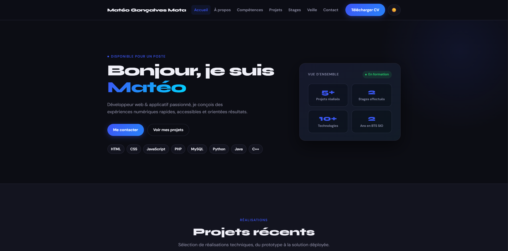
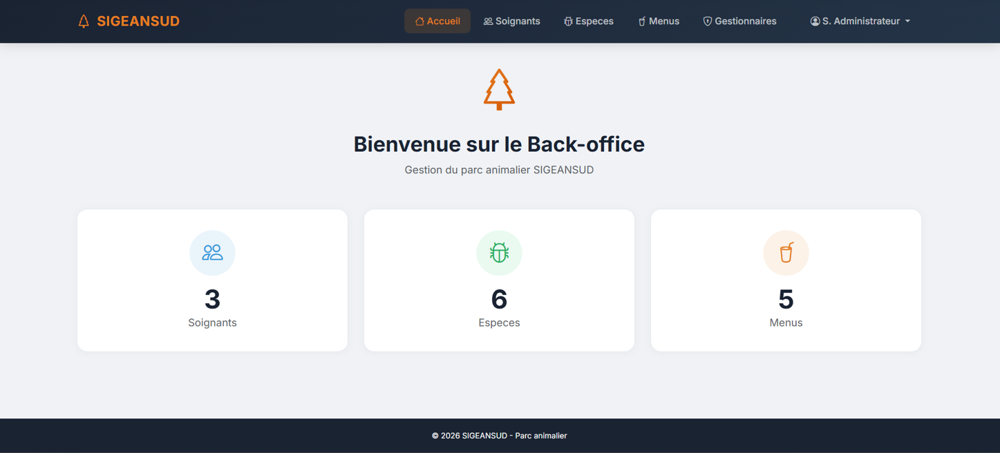
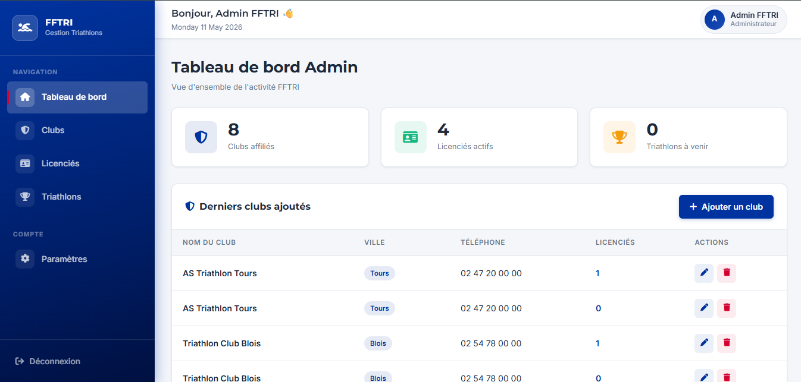

Portfolio personnel
Ce portfolio est conçu pour être performant, accessible et facile à maintenir — 100% HTML/CSS/JS vanilla.
Voir le projetAlternant en Licence Informatique
Développeur d'applications en alternance à la Fondation AMIPI, je conçois des applications métier fiables pour l'industrie — du besoin terrain jusqu'à la mise en production.
🎓 Je recherche une alternance de 2 ans à partir de septembre 2027
Pour mon Master Informatique à l'Université d'Angers. Ouvert à toutes les technologies, idéalement dans l'industrie. Rythme : 5 semaines à l'université / 4 semaines en entreprise jusqu'en mars, puis temps plein en entreprise.
Alternance 2026 – 2027
En Licence Informatique à l'ESUPEC (Cholet), je travaille en alternance au sein du service Méthodes et de l'atelier de la Fondation AMIPI, une entreprise industrielle. Je développe des applications WinDev connectées à l'ERP AS400 qui simplifient le quotidien des équipes de production.

Réalisations
Sélection de réalisations techniques, du prototype à la solution déployée.

Ce portfolio est conçu pour être performant, accessible et facile à maintenir — 100% HTML/CSS/JS vanilla.
Voir le projet
Application complète pour parc animalier : app mobile, back-office et API REST avec Symfony 7.
Voir le projet
Application full-stack pour gérer inscriptions, parcours et statistiques d'un triathlon.
Voir le projetÀ propos
Titulaire d'un BTS SIO option SLAM (16,77/20 de moyenne), je poursuis en Licence Informatique en alternance. Je conçois, développe et maintiens des applications web et métier, et j'aime transformer des besoins concrets en outils fiables et simples à utiliser.
Contact
Je cherche une alternance de 2 ans à partir de septembre 2027 pour mon Master Informatique — discutons-en.